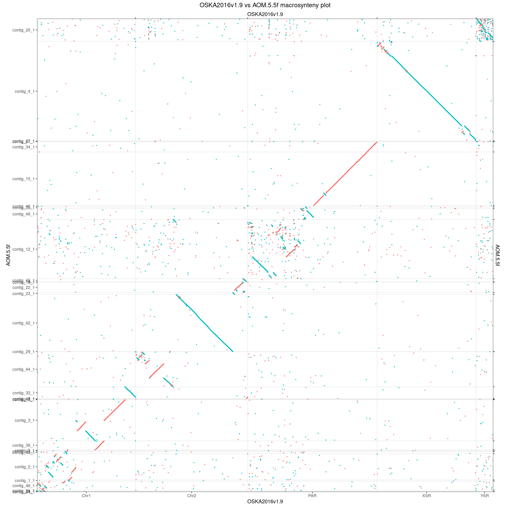
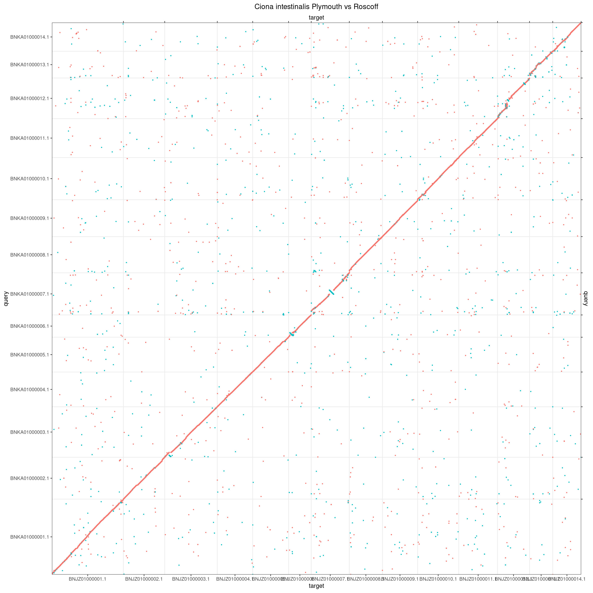

Whole-genome dot-plots
Charles Plessy
14 December, 2022
Source:vignettes/OxfordPlots.Rmd
OxfordPlots.Rmd
knitr::opts_knit$set(cache = TRUE)Introduction
This vignette produces alignment line plots of pairs of genomes to illustrate differences in the extent of scrambling in Oikopleura compared to equivalent pairs in other genera.
The core functions used here are maintained in our GenomicBreaks R package, which is fully documented at: https://oist.github.io/GenomicBreaks.
See vignette("ParallelPlots", package = "OikScrambling") for parallel comparisons of homologous chromosomes in more than one species.
Load R pacakges and data
library('OikScrambling') |> suppressPackageStartupMessages()
genomes <- OikScrambling:::loadAllGenomes()
load("BreakPoints.Rdata")Oikopleura
Oki vs Bar
makeOxfordPlots(coa$Oki_Bar, diag = FALSE)
# stringDist_GBreaks <- function(x, method = "levenshtein", ignoreCase = FALSE, diag = FALSE, upper = FALSE, ...) {
# targetS <- getSeq(x)
# queryS <- getSeq(x$query)
# seqs <- Pairs(targetS, queryS)
# sapply(seqs, \(pair){
# stringDist(c(first(pair), second(pair)))
# })
# }
mkOxPlotWindow <- function(gb, win = 5e6, size = 2, centre = c('midpoint', 'maxwidth'), ...) {
centre <- match.arg(centre)
gb <- forceSeqLengths(gb)
longest_target_seq <- seqlengths(gb) |> sort() |> tail(1) |> names()
best_query_match <- gb[seqnames(gb) == longest_target_seq]$query |> seqnames() |> table() |> sort() |> tail(1) |> names()
if (centre == 'midpoint') {
target_centre <- round(seqlengths(gb)[longest_target_seq] / 2)
query_centre <- round(seqlengths(gb$query)[best_query_match] / 2)
} else {
gb_coa <- coalesce_contigs(gb)
maxwidth <- which.max(width(gb_coa))
target_centre <- gb_coa[maxwidth] |> resize(1, fix = "center") |> start()
query_centre <- gb_coa$query[maxwidth] |> resize(1, fix = "center") |> start()
}
gb <- gb |> plyranges::filter(
seqnames == longest_target_seq,
seqnames(query) == best_query_match,
start > target_centre - win,
end < target_centre + win,
start(query) > query_centre - win,
end(query) < query_centre + win
)
# score(gb) <- stringDist_GBreaks(gb) / width(gb)
makeOxfordPlots(gb, col = "strand", size = size, ...) +
theme_bw() +
theme(legend.position="none")
}
mkOxPlotWindow(gbs$Oki_Bar)
Oki vs Osa
Dot plot intended for panel A of figure 1.
makeOxfordPlots(coa$Oki_Osa, diag = FALSE) + theme_bw() + theme(legend.position="none")
The plot below is based on aligned regions (before coalescing). It is displayed to demonstrate that it is visually similar to the one above made on mapped regions (object after coalescing).
makeOxfordPlots(gbs$Oki_Osa, diag = FALSE) +
scale_color_manual(values = c("#E78CC4", "#B2D659", "#FFDA39", "#8EA2C6", "#69BEA4")) +
theme_bw() +
theme(legend.position="none")
Oxford plot colored by strand.
makeOxfordPlots(coa$Oki_Osa, diag = FALSE, col = "strand") + theme_bw() + theme(legend.position="none")10-Mb square window plot.
mkOxPlotWindow(gbs$Oki_Osa)


Osa vs Aom
makeOxfordPlots(coa$Osa_Aom, diag = FALSE)
Osa_Aom_PAR <- gbs$Osa_Aom |> plyranges::filter(seqnames == "PAR")
seqlevels(Osa_Aom_PAR) <- seqlevelsInUse(Osa_Aom_PAR)
seqlevels(Osa_Aom_PAR$query) <- seqlevelsInUse(Osa_Aom_PAR$query)
makeOxfordPlots(Osa_Aom_PAR)
# Let's remove the contigs that have their main match elsewhere.
QTcoverage <- function(gb) {
stopifnot (length(seqlevels(gb)) == 1) # Not ready for full objects
stopifnot (!any(is.na(seqlengths(gb$query))))
grl <- split(gb, seqnames(gb$query))
lapply(grl, \(gb) sum(width(gb$query))) |> unlist() / seqlengths(gb$query)
}
Osa_Aom_PAR[seqnames(Osa_Aom_PAR$query) %in% seqlevels(Osa_Aom_PAR$query)[QTcoverage(Osa_Aom_PAR) < 0.5]] <- NULL
seqlevels(Osa_Aom_PAR$query) <- seqlevelsInUse(Osa_Aom_PAR$query)
makeOxfordPlots(Osa_Aom_PAR)
# Let's remove the smallest ones that barely display on one pixel
seqlengths(Osa_Aom_PAR$query)## contig_12_1 contig_15_1 contig_34_1 contig_38_1 contig_49_1
## 7097394 6419763 1209792 203373 1316631
Osa_Aom_PAR[seqnames(Osa_Aom_PAR$query) %in% seqlevels(Osa_Aom_PAR$query)[seqlengths(Osa_Aom_PAR$query) < 2e4]] <- NULL
seqlevels(Osa_Aom_PAR$query) <- seqlevelsInUse(Osa_Aom_PAR$query)
makeOxfordPlots(Osa_Aom_PAR, col = "strand")
# And now let's flip by hand the ones that need
grl <- split(Osa_Aom_PAR, seqnames(Osa_Aom_PAR$query))
grl[["contig_38_1"]] <- reverse(grl[["contig_38_1"]], query = TRUE)
grl[["contig_49_1"]] <- reverse(grl[["contig_49_1"]], query = TRUE)
Osa_Aom_PAR <- unlist(grl)
makeOxfordPlots(Osa_Aom_PAR, col = "strand")
# Finally, let's reorder and merge remaining seqlevels
seqlevels(Osa_Aom_PAR$query) <- seqlevels(Osa_Aom_PAR$query)[orderQuerySeqLevels(Osa_Aom_PAR)]
Osa_Aom_PAR$query <- mergeSeqLevels(Osa_Aom_PAR$query, seqlevels(Osa_Aom_PAR$query), "PAR")
mkOxPlotWindow(Osa_Aom_PAR)
Oki vs Kum
makeOxfordPlots(coa$Oki_Kum)
Oki_Kum_PAR <- gbs$Oki_Kum |> plyranges::filter(seqnames == "PAR")
seqlevels(Oki_Kum_PAR) <- seqlevelsInUse(Oki_Kum_PAR)
seqlevels(Oki_Kum_PAR$query) <- seqlevelsInUse(Oki_Kum_PAR$query)
makeOxfordPlots(Oki_Kum_PAR)
# Let's remove the contigs that have their main match elsewhere.
QTcoverage <- function(gb) {
stopifnot (length(seqlevels(gb)) == 1) # Not ready for full objects
stopifnot (!any(is.na(seqlengths(gb$query))))
grl <- split(gb, seqnames(gb$query))
lapply(grl, \(gb) sum(width(gb$query))) |> unlist() / seqlengths(gb$query)
}
Oki_Kum_PAR[seqnames(Oki_Kum_PAR$query) %in% seqlevels(Oki_Kum_PAR$query)[QTcoverage(Oki_Kum_PAR) < 0.5]] <- NULL
seqlevels(Oki_Kum_PAR$query) <- seqlevelsInUse(Oki_Kum_PAR$query)
makeOxfordPlots(Oki_Kum_PAR)
# Let's remove the smallest ones that barely display on one pixel
seqlengths(Oki_Kum_PAR$query)## contig_12_1 contig_13_1 contig_18_1 contig_28_1 contig_38_1 contig_41_1
## 2357322 793615 832 6415228 61242 2611992
## contig_43_1 contig_61_1 contig_72_1 contig_82_1 contig_85_1 contig_89_1
## 841236 17591 84743 2322619 428051 241503
## contig_91_1
## 126775
Oki_Kum_PAR[seqnames(Oki_Kum_PAR$query) %in% seqlevels(Oki_Kum_PAR$query)[seqlengths(Oki_Kum_PAR$query) < 2e4]] <- NULL
seqlevels(Oki_Kum_PAR$query) <- seqlevelsInUse(Oki_Kum_PAR$query)
makeOxfordPlots(Oki_Kum_PAR)
# And now let's flip by hand the ones that need
grl <- split(Oki_Kum_PAR, seqnames(Oki_Kum_PAR$query))
grl[["contig_12_1"]] <- reverse(grl[["contig_12_1"]], query = TRUE)
grl[["contig_43_1"]] <- reverse(grl[["contig_43_1"]], query = TRUE)
Oki_Kum_PAR <- unlist(grl)
makeOxfordPlots(Oki_Kum_PAR)
# Finally, let's reorder and merge remaining seqlevels
seqlevels(Oki_Kum_PAR$query) <- seqlevels(Oki_Kum_PAR$query)[orderQuerySeqLevels(Oki_Kum_PAR)]
Oki_Kum_PAR$query <- mergeSeqLevels(Oki_Kum_PAR$query, seqlevels(Oki_Kum_PAR$query), "PAR")
mkOxPlotWindow(Oki_Kum_PAR)
Ciona
Ciona intestinalis (Plymouth vs Roscoff)
makeOxfordPlots(coa$Ply_Ros) + ggtitle("Ciona intestinalis Plymouth vs Roscoff")
mkOxPlotWindow(gbs$Ply_Ros) + ggtitle("Ciona intestinalis Plymouth vs Roscoff")
Ciona intestinalis (Plymouth) vs Ciona robusta
makeOxfordPlots(coa$Ply_Rob) + ggtitle("Ciona intestinalis Plymouth vs Ciona robusta")
mkOxPlotWindow(gbs$Ply_Rob) + ggtitle("Ciona intestinalis Plymouth vs Ciona robusta")
Troubleshoot of grid pattern
We see horizontal patterns what are they? I think they may be pericentromeric regions.
makeOxfordPlots(coa$Ply_Rob) + ggtitle("Ciona intestinalis Plymouth vs Ciona robusta")
coa$Ply_Rob |>
plyranges::filter(seqnames(query) %in% c("BJTB01000010.1", "BJTB01000011.1", "BJTB01000012.1", "BJTB01000013.1", "BJTB01000014.1")) |>
plyranges::filter(seqnames %in% c("BNJZ01000005.1", "BNJZ01000006.1", "BNJZ01000007.1", "BNJZ01000008.1", "BNJZ01000009.1")) |>
makeOxfordPlots() + ggtitle("C. int. P vs C. rob., subset near BJTB01000012.1 and BNJZ01000007.1")
coa$Ply_Rob |>
plyranges::filter(seqnames(query) %in% c("BJTB01000011.1", "BJTB01000012.1", "BJTB01000013.1")) |>
plyranges::filter(seqnames %in% c("BNJZ01000006.1", "BNJZ01000007.1", "BNJZ01000008.1")) |>
makeOxfordPlots() + ggtitle("C. int. P vs C. rob., subset near (closer) BJTB01000012.1 and BNJZ01000007.1")
coa$Ply_Rob |>
plyranges::filter(seqnames(query) %in% c("BJTB01000002.1", "BJTB01000003.1", "BJTB01000004.1", "BJTB01000005.1", "BJTB01000006.1")) |>
plyranges::filter(seqnames %in% c("BNJZ01000010.1", "BNJZ01000011.1", "BNJZ01000012.1", "BNJZ01000013.1", "BNJZ01000014.1")) |>
makeOxfordPlots() + ggtitle("C. int. P vs C. rob., subset near BJTB01000004.1 and BNJZ01000012.1")
coa$Ply_Rob |>
plyranges::filter(seqnames(query) %in% c("BJTB01000003.1", "BJTB01000004.1", "BJTB01000005.1")) |>
plyranges::filter(seqnames %in% c("BNJZ01000011.1", "BNJZ01000012.1", "BNJZ01000013.1")) |>
makeOxfordPlots() + ggtitle("C. int. P vs C. rob., subset near (closer) BJTB01000004.1 and BNJZ01000012.1")
Ciona intestinalis (Plymouth) vs Ciona savignyi
makeOxfordPlots(coa$Ply_Sav) + ggtitle("Ciona intestinalis Plymouth vs Ciona savignyi")
Ply_Sav_chr1 <- gbs$Ply_Sav |> plyranges::filter(seqnames == "BNJZ01000001.1")
seqlevels(Ply_Sav_chr1) <- seqlevelsInUse(Ply_Sav_chr1)
seqlevels(Ply_Sav_chr1$query) <- seqlevelsInUse(Ply_Sav_chr1$query)
Ply_Sav_chr1$query <- forceSeqLengths(Ply_Sav_chr1$query)
makeOxfordPlots(Ply_Sav_chr1)
# Let's remove the contigs that have their main match elsewhere.
QTcoverage <- function(gb) {
stopifnot (length(seqlevels(gb)) == 1) # Not ready for full objects
stopifnot (!any(is.na(seqlengths(gb$query))))
grl <- split(gb, seqnames(gb$query))
lapply(grl, \(gb) sum(width(gb$query))) |> unlist() / seqlengths(gb$query)
}
Ply_Sav_chr1[seqnames(Ply_Sav_chr1$query) %in% seqlevels(Ply_Sav_chr1$query)[QTcoverage(Ply_Sav_chr1) < 0.05]] <- NULL
seqlevels(Ply_Sav_chr1$query) <- seqlevelsInUse(Ply_Sav_chr1$query)
makeOxfordPlots(Ply_Sav_chr1)
# Let's remove the smallest ones that barely display on one pixel
seqlengths(Ply_Sav_chr1$query)## R1063 R113 R1167 R1383 R14 R1490 R1596 R162 R173 R1779
## 24606 277504 10138 7422 1702960 3223 8495 276690 455223 32296
## R1942 R2368 R2407 R2517 R268 R27 R281 R2872 R30 R31
## 10471 6428 9904 5720 550239 2366314 114725 8506 3493700 766944
## R347 R352 R417 R489 R491 R5 R51 R62 R64 R650
## 180004 46220 61968 180871 28116 2728683 1639093 608627 540266 23432
## R767 R98
## 42085 434095
Ply_Sav_chr1[seqnames(Ply_Sav_chr1$query) %in% seqlevels(Ply_Sav_chr1$query)[seqlengths(Ply_Sav_chr1$query) < 2e4]] <- NULL
seqlevels(Ply_Sav_chr1$query) <- seqlevelsInUse(Ply_Sav_chr1$query)
makeOxfordPlots(Ply_Sav_chr1)
# Finally, let's reorder and merge remaining seqlevels
seqlevels(Ply_Sav_chr1$query) <- seqlevels(Ply_Sav_chr1$query)[orderQuerySeqLevels(Ply_Sav_chr1)]
Ply_Sav_chr1$query <- mergeSeqLevels(Ply_Sav_chr1$query, seqlevels(Ply_Sav_chr1$query), "Merged matching contigs")
makeOxfordPlots(Ply_Sav_chr1)
mkOxPlotWindow(Ply_Sav_chr1) + ggtitle("Ciona intestinalis Plymouth vs Ciona savignyi")
Drosophila
vs Drosophila mauritania
makeOxfordPlots(coa$Dme_Dma) + ggtitle("Dmel vs Dmau")
# Force strand flipping for aesthetic purpose
mkOxPlotWindow(gbs$Dme_Dma |> forceSeqLengths() |> reverse()) + ggtitle("Drosophila melanogaster vs Drosophila mauritania")
vs Drosophila yakuba
makeOxfordPlots(coa$Dme_Dya) + ggtitle("Dmel vs Dyak")
mkOxPlotWindow(gbs$Dme_Dya) + ggtitle("Drosophila melanogaster vs Drosophila yakuba")
vs Drosophila subpulchrella
makeOxfordPlots(coa$Dme_Dsu) + ggtitle("Dmel vs Dsub")
# Blacklist 3R as the algorithm does not find an nicely square window on it.
mkOxPlotWindow(gbs$Dme_Dsu |> plyranges::filter(seqnames != "3R")) + ggtitle("Drosophila melanogaster vs Drosophila subpulchrella")


Mammals
Human versus mouse
Chromosome 18 was chosen because it is small and it has the same name in both species. Region was centered on the alignment with the longest width, as otherwise the window out of target.
Still, most of the region is not aligned. The syntenic regions only look contiguous because the dots need to be thick to be easy to see.
hgmm <- load_genomic_breaks(system.file(("extdata/hg38_mm10/hg38_chr18__mm10_chr18.gff3"), package = "BreakpointsData"))
mkOxPlotWindow(hgmm, centre = 'maxwidth') + ggtitle("Homo sapiens vs Mus musculus")## Warning in min(x): no non-missing arguments to min; returning Inf## Warning in max(x): no non-missing arguments to max; returning -Inf## Warning in min(x): no non-missing arguments to min; returning Inf## Warning in max(x): no non-missing arguments to max; returning -Inf